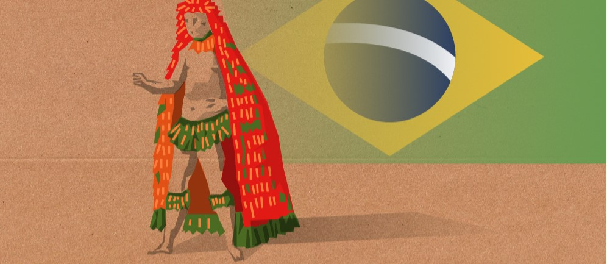
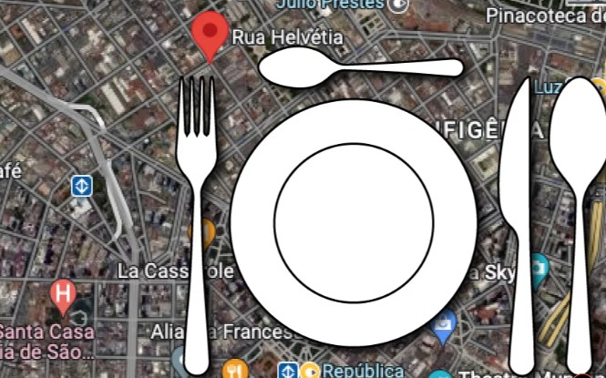
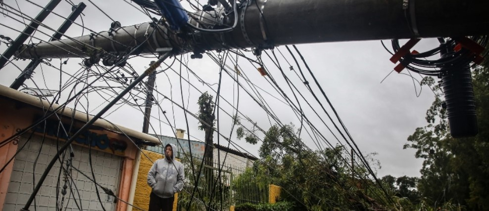

De súbito, tudo mudou
A multidão de refugiados, o medo polonês de ser o próximo na lista da invasão e o novo curso da direita radical
De súbito, tudo mudouA multidão de refugiados, o medo polonês de ser o próximo na lista da invasão e o novo curso da direita radical |
|
Bienal do mundo novoOs primeiros curadores negros da mostra de arte em São Paulo. |
|
|  |
A volta do manto TupinambáMuseu nacional da Dinamarca vai devolver para o Brasil relíquia sagrada que está na Europa desde o século XVII |
|  |
Madrugada VaziaCom dispersão das cracolândias, restaurantes do Centro de São Paulo fecham mais cedo e reforçam segurança |
De volta para o futuroA experiência radicalmente nova do Chile |
|
A bomba-relógio dos cartões de créditoFamílias brasileiras comprometem 27% da renda com dívidas, a maior parte relacionada a consumo |
|
"Proibido roubar. Risco de morte."Facções consolidam hegemonia na Amazônia e impõem falsa pacificação em áreas dominadas |
|
Mulheres nos dias de hojeO efeito-tesoura para mulheres na ciência |
|
|  |
Ilhados em meio ao cicloneO relato de uma professora que perdeu tudo mas abriu a porta de casa para deixar a água sair e conseguiu sobreviver |
Juros altos, varejo em baixaA crise em efeito dominó |
| Veja mais | Publicado em | Visualizações |
|---|---|---|
| Pedagogia da desativação | Juho, 2023 | 1.009 |
| Tijuca com maresia | Abril, 2023 | 975 |
| Colônia de pescadores em Copacabana faz 100 anos | Junho, 2023 | 624 |
| Pelé X Maradona à indiana | Maio, 2023 | 1.067 |
| Os riscos de corrigir os livros claássicos anfantojuvenis | Maio, 2023 | 548 |
| Americanas, a fraude titânica | Março, 2023 | 1.132 |
| O drama dos opioides | Maio, 2023 | 789 |
| A santa feminista | Fevereiro, 2023 | 490 |
| A insurreição permanente | Abril, 2023 | 594 |
| E Bruce Lee virou Freud | Maio, 2023 | 745 |
Estes são os autores mais favoritados do Guardare